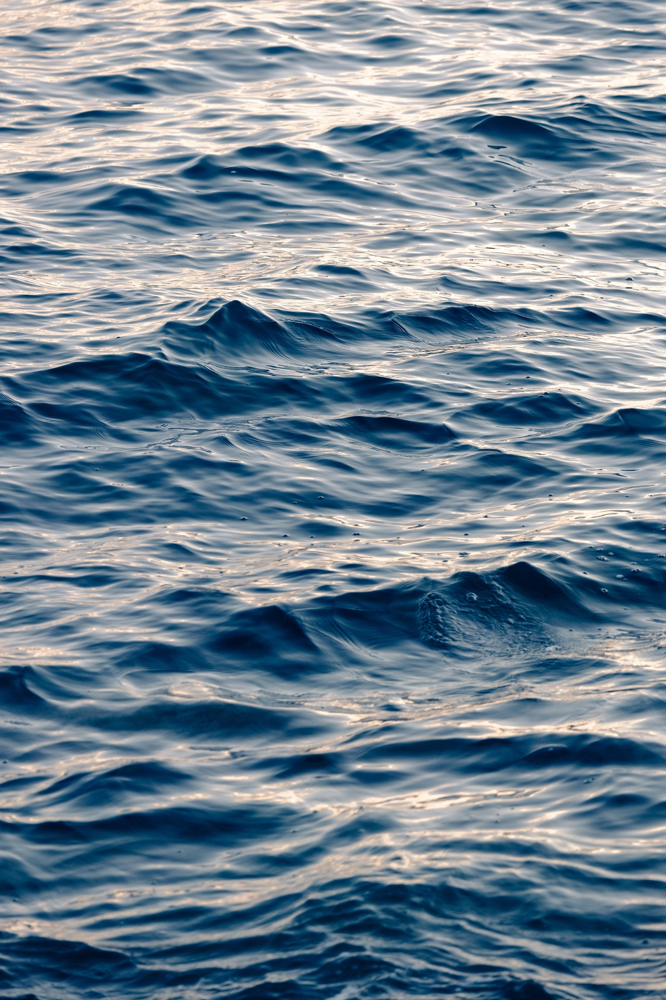

一份从海面特写里提取出来的配色与元素系统。深冷的底、暖金的光、全是曲线的形态。用于视频与演示文稿。
没有地平线，没有船，没有任何可以做参照的东西。整个画面就是一片起伏的水——深蓝的波谷占了绝大多数面积，低角度的光从侧面掠过来，只在浪脊上留下一道道金色的碎光。 这是纯粹的纹理与光，没有叙事，没有主体，也没有方向。
约四分之三的面积是蓝，金色只出现在波峰那一线，总量不超过 15%。这是整套配色的骨架——一旦金色变大，画面就失去了「深」。
整体明度低，但最深与最亮之间的跨度很大。做法是深浅拉开、中间调收窄，让画面只有「暗蓝」和「亮金」两级，而不是均匀的灰阶。
画面没有上下之分的参照物。版式上不要做传统的「上标题下内容」分区，改用漂浮的锚点——一块文字、一个数字，落在纹理上的任意位置。
画面里不存在直线和直角。所有元素——分隔、进度、图表、边框——都用起伏的波浪或弧线完成。这是这套语言里最容易识别的一条。
水面没有静止的状态。背景波纹应当始终保持极缓慢的横向流动，而不是「静止画面 + 入场动画」。动本身是这套调性的一部分。
九色。冷色承担面积与结构，金色是唯一的暖色，只用于强调。
#0A1B2C#16324F#2E5A82#5B84A8#8FA5B8#D4AE72#E6CE9C#F0E9DA#17324E做层次时优先在同一色相里改明度。以下每色 5 阶，从左到右由亮到暗。
| 色族 | 阶梯（从左至右） |
|---|---|
| 深渊蓝 | #3A5B7A · #24435F · #0F2438 · #081726 · #040D16 |
| 靛中蓝 | #7FA8C8 · #4E7BA3 · #2E5A82 · #1E4260 · #123047 |
| 浅海蓝 | #B8CFE0 · #8FAEC7 · #5B84A8 · #3F6484 · #2A4762 |
| 碎金 | #F5E7C8 · #E6CE9C · #D4AE72 · #B08C4E · #866A38 |
| 雾蓝 | #D3DEE8 · #B4C4D2 · #8FA5B8 · #6B8499 · #4C6579 |
深色底上，亮的颜色才跳得出来——所以金色是第一序列，而不是等号后面的点缀。
| 语义 | 用色 | 说明 |
|---|---|---|
| 主序列 / 核心 | 碎金 | 最亮的一档，用来画被讨论的那条线 |
| 对照 / 次级 | 浅海蓝 | 同期、行业均值、参考线 |
| 弱化 / 背景 | 雾蓝 | 需要存在但不抢戏的部分 |
| 峰值标注 | 浪尖白 | 只在最高点或结论点使用 |
| 基准 / 网格 | 靛中蓝 | 坐标轴、网格线、面积填充底 |
| 负值 / 缺失 | 深渊蓝 | 用描边而非填充表示空缺 |
底 #0A1B2C 或 #16324F，文字 #F0E9DA（对比 13.2:1）。这套配色的主场，暗底才能托住金色。
卡片底 #17324E，比画布亮一档，靠明度差分层而不靠描边。描边用 1px rgba(212,174,114,.18)。
海面这类高对比照片上压字，先叠 35% 深渊蓝蒙版并整体压暗一档。文字避开金色高光密集区，落在深蓝波谷上。
需要打印或浅色场合时：底 #F0E9DA，文字 #16324F，强调仍用 #D4AE72，但要看得出对比变弱了。
| 规则 | 做法 |
|---|---|
| 金色总量 ≤15% | 它是「碎光」不是「主色」。需要大面积暖色时改用浅海蓝，而不是把金色铺开。 |
| 金光只落在峰上 | 金色只出现在一个元素的最亮处或最高点，不要给一个面整体涂金。单点、细线、小面积才是这束光的形态。 |
| 金底不用深蓝字 | 碎金上的文字用深渊蓝（对比 9.4:1），不要用深海蓝（4.1:1，偏弱）。浅金底上同理。 |
| 两级明度，不铺中间调 | 画面尽量只留「深蓝」和「亮金」两级，中间调收窄。均匀的灰阶会让画面变浑。 |
| 不用纯黑 | 最暗用 #040D16。纯黑 #000 会把这套蓝色调压死，也会让金色显脏。 |
| 冷色不叠冷色 | 深海蓝与靛中蓝直接相接时，中间垫 1px 雾蓝细线，否则两块蓝糊成一片、分不出层次。 |
| 用途 | 最低对比 | 检查方式 |
|---|---|---|
| 正文 | 4.5 : 1 | 雾蓝在深海蓝上只有 3.4:1，只能用于注解，不能做正文 |
| 大标题（≥ 32px 细体） | 3 : 1 | 细字重需要更高对比补偿，实际按 4:1 执行 |
| 关键信息 | — | 金色 + 位置 + 标签三者至少占其二，不能只靠颜色 |
中文 思源黑体 Light / 苹方细体；英文 Inter Light / Helvetica Neue Thin。用轻字重、大字号、宽字距——深色底上的细字有通透感，粗字会显得笨重。
标题改用高对比衬线：Cormorant / Didot / 思源宋体 Light。字重更细、字距更宽，适合纪录片式的沉稳叙述。正文仍用无衬线。
| 层级 | 字号 | 字重 | 字距 | 行距 |
|---|---|---|---|---|
| 主标题 Display | 110 – 160 px | 200 | +4% | 1.12 |
| 章节标题 H1 | 64 – 80 px | 300 | +4% | 1.20 |
| 二级标题 H2 | 40 – 48 px | 300 | +3% | 1.35 |
| 正文 Body | 26 – 30 px | 300 | +2% | 1.85 |
| 数据数字 Metric | 130 – 220 px | 300 | +2% | 1.00 |
| 注解 Caption | 18 – 20 px | 400 | +8% | 1.60 |
| 字重只用细档 | 200 / 300 / 400 三档，不用 600 和 700。需要强调时提高字号或改成金色，而不是加粗。 |
| 正文加字距 | 中文正文加 2%、注解加 8%。宽字距是这套「冷、慢、开阔」气质的一半来源。 |
| 行长更短 | 一行中文最多 16 字（比一般规范更短）。行距拉到 1.85，让每一行之间有水的空间。 |
| 左对齐为主 | 正文一律左对齐，不用两端对齐。居中只用于封面、金句、单数字页。 |
| 数字用等宽 | 全部等宽老式数字，滚动时宽度不跳。数字是本套规范里最该被强调的对象。 |
列间距为列宽的 1/2，外边距 = 画面宽度的 10%（比常规更宽）。这张照片本身是满版纹理，版式就要靠更大的留白才能「透气」。
所有垂直间距是 8 的倍数：8 / 16 / 24 / 40 / 64 / 96 / 144。行距基准也用 8 的倍数单独记一套。
| 画幅 | 规则 |
|---|---|
| 16:9（视频/PPT） | 安全区 80% × 80%。不做上下分区，改用左右分置：信息在左、视觉在右，中间由一条横贯的波浪连接。标题不固定在顶部，落在纵向 30% – 45% 的位置。 |
| 9:16（竖屏） | 上 18% 与下 8% 留给平台 UI。核心信息放纵向 32% – 78%。竖屏因为窄，波浪要减到 1 条，避免分割过碎。 |
| 无地平线的处理 | 不要给页面加「页头 / 页脚」这类横带结构。所有元素凭锚点定位，靠留白和明度区分层级。 |
单屏一个锚点。画面边缘最少留 96px（1920 宽下）。元素之间宁可多留 24px。
卡片 4px、小元素 2px。这套是「水面」不是「有机体」——直角偏冷、偏利落，与深色底相配。
深色底上没有投影，用发光：0 0 40px rgba(212,174,114,.14)。金色元素周围一圈很淡的光晕，模拟碎光的扩散。
1px 或 0.5px，颜色 rgba(212,174,114,.18) 或 rgba(143,165,184,.16)。不用实心分隔条，用渐变淡出的细线。
所有图形元素从这六个母题里来。这条规则比色值更重要——它决定了整套东西看起来像不像同一片水。
| 镜面感 | 水面是镜子，但照到的是天空不是自己。元素可以带极淡的垂直渐变（同色两档），模拟反光的通透，幅度控制在 10% 以内。 |
| 颗粒 | 整页叠 4% – 6% 噪点。这张照片本身噪点就重，颗粒是它的质感来源之一。 |
| 柔焦分层 | 近处的水清晰、远处的水模糊 6 – 14px。做背景纹理时保留这层模糊，别全画面都一样锐。 |
| 有色阴影 | 深色底基本不用阴影，只在浅色备用画布上使用：rgba(10,27,44,·)。始终偏蓝，不用中性灰。 |
| 图标 | 线性图标 stroke 1 – 1.5px（比常规更细），圆头。优先用波纹与涟漪变体，避免方框和直角。 |
核心不是「入场动画」，而是**背景永远在动**。水面没有静止的状态——所有动效都是同一件事的不同尺度：水在流，光在掠过。
| 用途 | 动作 | 时长 | 缓动 |
|---|---|---|---|
| 背景波纹 | 匀速横向位移，无限循环，位移量 = 一个波长 | 16 – 24 s | linear |
| 元素入场 | 从下方 20px 上移 + 淡入 | 800 – 1200 ms | cubic-bezier(.22,1,.36,1) |
| 光泽扫过 | 一条金色渐变沿曲线从一端移到另一端 | 1400 – 2000 ms | cubic-bezier(.45,0,.55,1) |
| 涟漪扩散 | 同心椭圆由中心向外扩散并淡出 | 900 ms | ease-out |
| 数据增长 | 数值与波形同步推进，一条曲线画到底 | 1200 – 1800 ms | ease-out |
| 章节转场 | 横向波纹推移扫过整屏，露出下一幕 | 1000 ms | cubic-bezier(.4,0,.2,1) |
| 慢一个数量级 | 所有时长比常规快节奏片子长约一倍。入场 1 秒、背景循环 20 秒——快就不是海了。 |
| 连续不断 | 背景波纹永不停止，即使页面「静止」也在流动。这是这套调性最核心的一条。 |
| 位移随距离 | 离镜头越远的水层移动越慢（视差）。多层波纹背景用 0.4 / 0.7 / 1.0 的速度比。 |
| 只做位移与透明度 | 动效只改变位置和透明度，不做缩放、旋转、3D。水面不会翻滚。 |
| 光只扫一次 | 金色的光泽扫过是「一瞬」，不要来回反复。一个元素上只发生一次。 |
海面这类照片本身对比极强。压字前先叠 35% 深渊蓝并把整体亮度降一档，让文字有落脚的地方。
金色高光区密集的地方不压字——波峰之间那片深蓝才是文字的落点。金色区域留给数字本身。
这张图本身是抽象纹理，没有具象主体，所以满版铺图可用到总页数的 1/3（比常规更宽松）。
单屏文字不超过 30 字。这套调性靠画面本身撑场，字多了反而把水盖住。
所有照片套同一条调色：曝光 -0.3、对比 +10、高光 -14、阴影 -8、色温 -6（偏冷）、蓝色饱和 +8。
不用方框、不用带投影的卡片、不用直角图标、不用纯色实心按钮。图形一律来自第 06 节的六个母题。
直接粘进 HTML / 视频工程的样式表，命名与前面的色卡一一对应。
/* Reagan Yip · 碎金海面 · v1 */ :root { /* 冷色 · 面积与结构 */ --abyss: #0A1B2C; /* 深渊蓝 · 最深底 */ --deep: #16324F; /* 深海蓝 · 默认画布 */ --navy: #17324E; /* 层蓝 · 卡片浮层 */ --mid: #2E5A82; /* 靛中蓝 · 轴线/基准 */ --shallow: #5B84A8; /* 浅海蓝 · 次序列 */ --mist: #8FA5B8; /* 雾蓝 · 中性/注解 */ /* 暖色 · 光，只做强调 */ --glint: #D4AE72; /* 碎金 · 主序列 ≤15% */ --gold-lt: #E6CE9C; /* 浅金 · 悬停/峰值 */ --foam: #F0E9DA; /* 浪尖白 · 最高光/标题 */ /* 文字 */ --txt: #E8E2D4; --txt-2: #94A9BC; --txt-3: #6B8399; /* 形状与光影 */ --radius-card: 4px; --radius-sm: 2px; --radius-pill: 999px; --glow: 0 0 40px rgba(212,174,114,.14); --line-gold: 1px solid rgba(212,174,114,.18); --line-cool: 1px solid rgba(143,165,184,.16); --grain: .05; /* 噪点不透明度 */ --blur-layer: 10px; /* 远景水层模糊 */ /* 字体 */ --weight-display: 200; /* 只用 200/300/400 */ --tracking-body: .02em; /* 节奏 · 慢一个数量级 */ --ease-water: cubic-bezier(.22,1,.36,1); --ease-sheen: cubic-bezier(.45,0,.55,1); --t-in: 1000ms; --t-sheen: 1700ms; --t-flow: 20s; /* 背景波纹循环 */ }
四个典型版式，可直接当模板用。